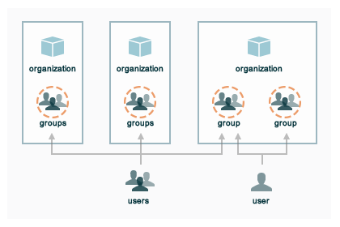

Authentication, Authorization
All communication with the Chef server must be authenticated using the Chef server API, which is a REST API that allows requests to be made to the Chef server. Only authenticated requests will be authorized. Most of the time, and especially when using knife, the chef-client, or the Chef server web interface, the use of the Chef server API is transparent. In some cases, the use of the Chef server API requires more detail, such as when making the request in Ruby code, with a knife plugin, or when using cURL.
Authentication
The authentication process ensures the Chef server responds only to requests made by trusted users. Public key encryption is used by the Chef server. When a node and/or a workstation is configured to run the chef-client, both public and private keys are created. The public key is stored on the Chef server, while the private key is returned to the user for safe keeping. (The private key is a .pem file located in the .chef directory or in /etc/chef.)
Both the chef-client and knife use the Chef server API when communicating with the Chef server. The chef-validator uses the Chef server API, but only during the first chef-client run on a node.
Each request to the Chef server from those executables sign a special group of HTTP headers with the private key. The Chef server then uses the public key to verify the headers and verify the contents.
chef-validator
Every request made by the chef-client to the Chef server must be an authenticated request using the Chef server API and a private key. When the chef-client makes a request to the Chef server, the chef-client authenticates each request using a private key located in /etc/chef/client.pem.
However, during the first chef-client run, this private key does not exist. Instead, the chef-client will attempt to use the private key assigned to the chef-validator, located in /etc/chef/validation.pem. (If, for any reason, the chef-validator is unable to make an authenticated request to the Chef server, the initial chef-client run will fail.)
During the initial chef-client run, the chef-client will register with the Chef server using the private key assigned to the chef-validator, after which the chef-client will obtain a client.pem private key for all future authentication requests to the Chef server.
After the initial chef-client run has completed successfully, the chef-validator is no longer required and may be deleted from the node. Use the delete_validation recipe found in the chef-client cookbook (https://github.com/chef-cookbooks/chef-client) to remove the chef-validator.
During a chef-client Run
RSA public key-pairs are used to authenticate the chef-client with the Chef server every time a chef-client needs access to data that is stored on the Chef server. This prevents any node from accessing data that it shouldn’t and it ensures that only nodes that are properly registered with the Chef server can be managed.
Knife
RSA public key-pairs are used to authenticate knife with the Chef server every time knife attempts to access the Chef server. This ensures that each instance of knife is properly registered with the Chef server and that only trusted users can make changes to the data.
knife can also use the knife exec subcommand to make specific, authenticated requests to the Chef server. knife plugins can also make authenticated requests to the Chef server by leveraging the knife exec subcommand.
API Requests
A knife plugin is a set of one (or more) subcommands that can be added to knife to support additional functionality that is not built-in to the base set of knife subcommands. Many of the knife plugins are built by members of the Chef community and several of them are built and maintained by Chef. A knife plugin is installed to the ~/.chef/plugins/knife/ directory, from where it can be run just like any other knife subcommand.
A knife plugin can be used to make authenticated API requests to the Chef server using the following methods:
| Method | Description |
|---|---|
| rest.delete_rest | Use to delete an object from the Chef server. |
| rest.get_rest | Use to get the details of an object on the Chef server. |
| rest.post_rest | Use to add an object to the Chef server. |
| rest.put_rest | Use to update an object on the Chef server. |
For example:
module MyCommands
class MyNodeDelete < Chef::Knife
#An implementation of knife node delete
banner 'knife my node delete [NODE_NAME]'
def run
if name_args.length < 1
show_usage
ui.fatal("You must specify a node name.")
exit 1
end
nodename = name_args[0]
api_endpoint = "nodes/#{nodename}"
# Again, we could just call rest.delete_rest
nodey = rest.get_rest(api_endpoint)
ui.confirm("Do you really want to delete #{nodey}")
nodey.destroy
end
end
end
From the Web Interface
The Chef server user interface uses the Chef server API to perform most operations. This ensures that authentication requests to the Chef server are authorized. This authentication process is handled automatically and is not something that users of the hosted Chef server will need to manage. For the on-premises Chef server, the authentication keys used by the web interface will need to be maintained by the individual administrators who are responsible for managing the server.
Other Options
The most common ways to interact with the Chef server using the Chef server API abstract the API from the user. That said, the Chef server API can be interacted with directly. The following sections describe a few of the ways that are available for doing that.
cURL
An API request can be made using cURL, which is a Bash shell script that requires two utilities: awk and openssl. The following example shows how an authenticated request can be made using the Chef server API and cURL:
#!/usr/bin/env bash
_chef_dir () {
# Helper function:
# Recursive function that searches for chef configuration directory
# It looks upward from the cwd until it hits /. If no directory is found,
# ~/.chef is chosen if it exists
# You could simply hard-code the path below
if [ "$PWD" = "/" ]; then
if [ -d ".chef" ]; then
echo "/.chef"
elif [ -d "$HOME/.chef" ]; then
echo "$HOME/.chef"
fi
return
fi
if [ -d '.chef' ];then
echo "${PWD}/.chef"
else
(cd ..; _chef_dir)
fi
}
_chomp () {
# helper function to remove newlines
awk '{printf "%s", $0}'
}
chef_api_request() {
# This is the meat-and-potatoes, or rice-and-vegetables, your preference really.
local method path body timestamp chef_server_url client_name hashed_body hashed_path
local canonical_request headers auth_headers
chef_server_url="https://api.opscode.com/organizations/my_org"
# '/organizations/ORG_NAME' is needed
if echo $chef_server_url | grep -q "/organizations/" ; then
endpoint=/organizations/${chef_server_url#*/organizations/}${2%%\?*}
else
endpoint=${2%%\?*}
fi
path=${chef_server_url}$2
client_name="chef_user"
method=$1
body=$3
hashed_path=$(echo -n "$endpoint" | openssl dgst -sha1 -binary | openssl enc -base64)
hashed_body=$(echo -n "$body" | openssl dgst -sha1 -binary | openssl enc -base64)
timestamp=$(date -u "+%Y-%m-%dT%H:%M:%SZ")
canonical_request="Method:$method\nHashed Path:$hashed_path\nX-Ops-Content-Hash:$hashed_body\nX-Ops-Timestamp:$timestamp\nX-Ops-UserId:$client_name"
headers="-H X-Ops-Timestamp:$timestamp \
-H X-Ops-Userid:$client_name \
-H X-Chef-Version:0.10.4 \
-H Accept:application/json \
-H X-Ops-Content-Hash:$hashed_body \
-H X-Ops-Sign:version=1.0"
auth_headers=$(printf "$canonical_request" | openssl rsautl -sign -inkey \
"$(_chef_dir)/${client_name}.pem" | openssl enc -base64 | _chomp | awk '{ll=int(length/60);i=0; \
while (i<=ll) {printf " -H X-Ops-Authorization-%s:%s", i+1, substr($0,i*60+1,60);i=i+1}}')
case $method in
GET)
curl_command="curl $headers $auth_headers $path"
$curl_command
;;
*)
echo "Unknown Method. I only know: GET" >&2
return 1
;;
esac
}
chef_api_request "$@"
After saving this shell script to a file named chef_api_request, use it similar to the following:
$ bash chef_api_request GET "/clients"
PyChef
An API request can be made using PyChef, which is a Python library that meets the Mixlib::Authentication requirements so that it can easily interact with the Chef server. The following example shows how an authenticated request can be made using the Chef server API and PyChef:
from chef import autoconfigure, Node
api = autoconfigure()
n = Node('web1')
print n['fqdn']
n['myapp']['version'] = '1.0'
n.save()
and the following example shows how to make API calls directly:
from chef import autoconfigure
api = autoconfigure()
print api.api_request('GET', '/clients')
The previous examples assume that the current working directory is such that PyChef can find a valid configuration file in the same manner as the chef-client or knife. For more about PyChef, see: https://github.com/coderanger/pychef.
Ruby
On a system with the chef-client installed, use Ruby to make an authenticated request to the Chef server:
require 'rubygems'
require 'chef/config'
require 'chef/log'
require 'chef/rest'
chef_server_url = 'https://chefserver.com'
client_name = 'clientname'
signing_key_filename = '/path/to/pem/for/clientname'
rest = Chef::REST.new(chef_server_url, client_name, signing_key_filename)
puts rest.get_rest('/clients')
or:
require 'rubygems'
require 'mixlib/cli'
require 'chef'
require 'chef/node'
require 'chef/mixin/xml_escape'
require 'json'
config_file = 'c:/chef/client.rb'
Chef::Config.from_file(config_file)
Chef::Log.level = Chef::Config[:log_level]
def Usage()
puts '/etc/chef/client.rb' # The config file location, e.g. ~/home/.chef/knife.rb etc
config_file = gets.chomp
if (!File.exist?(config_file))
puts 'config_file #{config_file} does not exist. Exiting.\n'
exit
end
STDOUT.puts <<-EOF
Choose options e.g. 1
1 Display all nodes per environment
2 Display all nodes in detail (can be slow if there a large number of nodes)
9 Exit
EOF
end
def ExecuteUserChoice()
testoption = gets.chomp
case testoption
when '1'
Execute(method(:DisplayNodesPerEnv))
when '2'
Execute(method(:DisplayNodesDetail))
when '9'
puts 'exit'
else
puts 'Unknown option #{testoption}. Exiting\n'
exit
end
end
def DisplayNodesPerEnv()
Chef::Environment.list(false).each do |envr|
print 'ENVIRONMENT: ', envr[0], '\n'
Chef::Node.list_by_environment(envr[0], false).each do |node_info|
print '\tNODE: ', node_info[0], '\n'
print '\t\tURL: ', node_info[1], '\n'
end
end
end
def DisplayNodesDetail()
Chef::Node.list(true).each do |node_array|
node = node_array[1]
print '#{node.name}\n'
print '\t#{node[:fqdn]}\n'
print '\t#{node[:kernel][:machine]}\n'
print '\t#{node[:kernel][:os]}\n'
print '\t#{node[:platform]}\n'
print '\t#{node[:platform_version]}\n'
print '\t#{node.chef_environment}\n'
print '\t#{node.run_list.roles}\n'
end
end
def Execute(option)
begin
profilestart = Time.now
option.call()
profileend = Time.now
timeofrun = profileend - profilestart
print 'Time taken = #{timeofrun}'
rescue Exception => ex
print 'Error calling chef API'
print ex.message
print ex.backtrace.join('\n')
end
end
Usage()
ExecuteUserChoice()
Another way Ruby can be used with the Chef server API is to get objects from the Chef server, and then interact with the returned data using Ruby methods. Whenever possible, the Chef server API will return an object of the relevant type. The returned object is then available to be called by other methods. For example, the api.get method can be used to return a node named foobar, and then .destroy can be used to delete that node:
silly_node = api.get('/nodes/foobar')
silly_node.destroy
Debug Authentication Issues
In some cases, the chef-client may receive a 401 response to the authentication request and a 403 response to an authorization request. An authentication error error may look like the following:
[Wed, 05 Oct 2011 15:43:34 -0700] INFO: HTTP Request Returned 401
Unauthorized: Failed to authenticate as node_name. Ensure that your node_name and client key are correct.
To debug authentication problems, determine which chef-client is attempting to authenticate. This is often found in the log messages for that chef-client. Debug logging can be enabled on a chef-client using the following command:
$ chef-client -l debugWhen debug logging is enabled, a log entry will look like the following:
[Wed, 05 Oct 2011 22:05:35 +0000] DEBUG: Signing the request as NODE_NAME
If the authentication request occurs during the initial chef-client run, the issue is most likely with the private key.
If the authentication is happening on the node, there are a number of common causes:
- The client.pem file is incorrect. This can be fixed by deleting the client.pem file and re-running the chef-client. When the chef-client re-runs, it will re-attempt to register with the Chef server and generate the correct key.
- A node_name is different from the one used during the initial chef-client run. This can happen for a number of reasons. For example, if the client.rb file does not specify the correct node name and the host name has recently changed. This issue can be resolved by explicitly setting the node name in the client.rb file or by using the -N option for the chef-client executable.
- The system clock has drifted from the actual time by more than 15 minutes. This can be fixed by syncing the clock with an Network Time Protocol (NTP) server.
Authorization
The Chef server uses a role-based access control (RBAC) model to ensure that users may only perform authorized actions.
Chef Server
The Chef server uses role-based access control (RBAC) to restrict access to objects—nodes, environments, roles, data bags, cookbooks, and so on. This ensures that only authorized user and/or chef-client requests to the Chef server are allowed. Access to objects on the Chef server is fine-grained, allowing access to be defined by object type, object, group, user, and organization. The Chef server uses permissions to define how a user may interact with an object, after they have been authorized to do so.
The Chef server uses organizations, groups, and users to define role-based access control:
{kind=link}
{kind=link}
When a user makes a request to the Chef server using the Chef server API, permission to perform that action is determined by the following process:
- Check if the user has permission to the object type
- If no, recursively check if the user is a member of a security group that has permission to that object
- If yes, allow the user to perform the action
Permissions are managed using the Chef management console add-on in the Chef server web user interface.
Object Permissions
The Chef server includes the following object permissions:
| Permission | Description |
|---|---|
| Delete | Use the Delete permission to define which users and groups may delete an object. This permission is required for any user who uses the knife [object] delete [object_name] argument to interact with objects on the Chef server. |
| Grant | Use the Grant permission to define which users and groups may configure permissions on an object. This permission is required for any user who configures permissions using the Administration tab in the Chef management console. |
| Read | Use the Read permission to define which users and groups may view the details of an object. This permission is required for any user who uses the knife [object] show [object_name] argument to interact with objects on the Chef server. |
| Update | Use the Update permission to define which users and groups may edit the details of an object. This permission is required for any user who uses the knife [object] edit [object_name] argument to interact with objects on the Chef server and for any chef-client to save node data to the Chef server at the conclusion of a chef-client run. |
Global Permissions
The Chef server includes the following global permissions:
| Permission | Description |
|---|---|
| Create | Use the Create global permission to define which users and groups may create the following server object types: cookbooks, data bags, environments, nodes, roles, and tags. This permission is required for any user who uses the knife [object] create argument to interact with objects on the Chef server. |
| List | Use the List global permission to define which users and groups may view the following server object types: cookbooks, data bags, environments, nodes, roles, and tags. This permission is required for any user who uses the knife [object] list argument to interact with objects on the Chef server. |
These permissions set the default permissions for the following Chef server object types: clients, cookbooks, data bags, environments, groups, nodes, roles, and sandboxes.
Client Key Permissions
Note
This is only necessary after migrating a client from one Chef server to another. Permissions must be reset for client keys after the migration.
A client is an actor that has permission to access the Chef server. A client is most often a node (on which the chef-client runs), but is also a workstation (on which knife runs), or some other machine that is configured to use the Chef server API. Each request to the Chef server that is made by a client uses a private key for authentication that must be authorized by the public key on the Chef server.
Keys should have DELETE, GRANT, READ and UPDATE permissions.
Use the following code to set the correct permissions:
#!/usr/bin/env ruby
require 'rubygems'
require 'chef/knife'
Chef::Config.from_file(File.join(Chef::Knife.chef_config_dir, 'knife.rb'))
rest = Chef::REST.new(Chef::Config[:chef_server_url])
Chef::Node.list.each do |node|
%w{read update delete grant}.each do |perm|
ace = rest.get("nodes/#{node[0]}/_acl")[perm]
ace['actors'] << node[0] unless ace['actors'].include?(node[0])
rest.put("nodes/#{node[0]}/_acl/#{perm}", perm => ace)
puts "Client \"#{node[0]}\" granted \"#{perm}\" access on node \"#{node[0]}\""
end
end
Save it as a Ruby script—chef_server_permissions.rb, for example—in the .chef/scripts directory located in the chef-repo, and then run a knife command similar to:
$ knife exec chef_server_permissions.rb
Default Groups
The Chef server includes the following default groups:
| Group | Description |
|---|---|
| admins | The admins group defines the list of users who have administrative rights to all objects and object types for a single organization. |
| billing_admins | The billing_admins group defines the list of users who have permission to manage billing information. This permission exists only for the hosted Chef server. |
| clients | The clients group defines the list of nodes on which a chef-client is installed and under management by Chef. In general, think of this permission as “all of the non-human actors—the chef-client, in nearly every case—that get data from, and/or upload data to, the Chef server”. Newly-created chef-client instances are added to this group automatically. |
| public_key_read_access | The public_key_read_access group defines which users and clients have read permissions to key-related endpoints in the Chef server API. |
| users | The users group defines the list of users who use knife and the Chef management console to interact with objects and object types. In general, think of this permission as “all of the non-admin human actors who work with data that is uploaded to and/or downloaded from the Chef server”. |
Multiple Organizations
A single instance of the Chef server can support many organizations. Each organization has a unique set of groups and users. Each organization manages a unique set of nodes, on which a chef-client is installed and configured so that it may interact with a single organization on the Chef server.
A user may belong to multiple organizations under the following conditions:
- Role-based access control is configured per-organization
- For a single user to interact with the Chef server using knife from the same chef-repo, that user may need to edit their knife.rb file prior to that interaction
Using multiple organizations within the Chef server ensures that the same toolset, coding patterns and practices, physical hardware, and product support effort is being applied across the entire company, even when:
- Multiple product groups must be supported—each product group can have its own security requirements, schedule, and goals
- Updates occur on different schedules—the nodes in one organization are managed completely independently from the nodes in another
- Individual teams have competing needs for object and object types—data bags, environments, roles, and cookbooks are unique to each organization, even if they share the same name
Many Users, Same Repo
It is possible for multiple users to access the Chef server using the same knife.rb file. (A user can even access multiple organizations if, for example, each instance of the chef-repo contained the same copy of the knife.rb file.) This can be done by adding the knife.rb file to the chef-repo, and then using environment variables to handle the user-specific credential details and/or sensitive values. For example:
current_dir = File.dirname(__FILE__)
user = ENV['OPSCODE_USER'] || ENV['USER']
node_name user
client_key "#{ENV['HOME']}/chef-repo/.chef/#{user}.pem"
validation_client_name "#{ENV['ORGNAME']}-validator"
validation_key "#{ENV['HOME']}/chef-repo/.chef/#{ENV['ORGNAME']}-validator.pem"
chef_server_url "https://api.opscode.com/organizations/#{ENV['ORGNAME']}"
syntax_check_cache_path "#{ENV['HOME']}/chef-repo/.chef/syntax_check_cache"
cookbook_path ["#{current_dir}/../cookbooks"]
cookbook_copyright "Your Company, Inc."
cookbook_license "apachev2"
cookbook_email "cookbooks@yourcompany.com"
# Amazon AWS
knife[:aws_access_key_id] = ENV['AWS_ACCESS_KEY_ID']
knife[:aws_secret_access_key] = ENV['AWS_SECRET_ACCESS_KEY']
# Rackspace Cloud
knife[:rackspace_api_username] = ENV['RACKSPACE_USERNAME']
knife[:rackspace_api_key] = ENV['RACKSPACE_API_KEY']
Chef server API
The Chef server API is a REST API that provides access to objects on the Chef server, including nodes, environments, roles, cookbooks (and cookbook versions), and to manage an API client list and the associated RSA public key-pairs.
Authentication Headers
Authentication to the Chef server occurs when a specific set of HTTP headers are signed using a private key that is associated with the machine from which the request is made. The request is authorized if the Chef server can verify the signature using the public key. Only authorized actions are allowed.
Note
Most authentication requests made to the Chef server are abstracted from the user. Such as when using knife or the Chef server user interface. In some cases, such as when using the knife exec subcommand, the authentication requests need to be made more explicitly, but still in a way that does not require authentication headers. In a few cases, such as when using arbitrary Ruby code or cURL, it may be necessary to include the full authentication header as part of the request to the Chef server.
Header Format
All hashing is done using SHA-1 and encoded in Base64. Base64 encoding should have line breaks every 60 characters. Each canonical header should be encoded in the following format:
Method:HTTP_METHOD
Hashed Path:HASHED_PATH
X-Ops-Content-Hash:HASHED_BODY
X-Ops-Timestamp:TIME
X-Ops-UserId:USERID
where:
- HTTP_METHOD is the method used in the API request (GET, POST, and so on)
- HASHED_PATH is the path of the request: /organizations/NAME/name_of_endpoint. The HASHED_PATH must be hashed using SHA-1 and encoded using Base64, must not have repeated forward slashes (/), must not end in a forward slash (unless the path is /), and must not include a query string.
- The private key must be an RSA key in the SSL .pem file format. This signature is then broken into character strings (of not more than 60 characters per line) and placed in the header.
The Chef server decrypts this header and ensures its content matches the content of the non-encrypted headers that were in the request. The timestamp of the message is checked to ensure the request was received within a reasonable amount of time. One approach generating the signed headers is to use mixlib-authentication, which is a class-based header signing authentication object similar to the one used by the chef-client.
Required Headers
The following authentication headers are required:
| Feature | Description |
|---|---|
| Accept | The format in which response data from the Chef server is provided. This header must be set to application/json. |
| Host | The host name (and port number) to which a request is sent. (Port number 80 does not need to be specified.) For example: api.opscode.com (which is the same as api.opscode.com:80) or api.opscode.com:443. |
| X-Chef-Version | The version of the chef-client executable from which a request is made. This header ensures that responses are in the correct format. For example: 12.0.2 or 11.16.x. |
| X-Ops-Authorization-N | One (or more) 60 character segments that comprise the canonical header. A canonical header is signed with the private key used by the client machine from which the request is sent, and is also encoded using Base64. If more than one segment is required, each should be named sequentially, e.g. X-Ops-Authorization-1, X-Ops-Authorization-2, X-Ops-Authorization-N, where N represents the integer used by the last header that is part of the request. |
| X-Ops-Content-Hash | The body of the request. The body should be hashed using SHA-1 and encoded using Base64. All hashing is done using SHA-1 and encoded in Base64. Base64 encoding should have line breaks every 60 characters. |
| X-Ops-Sign | Set this header to the following value: version=1.0. |
| X-Ops-Timestamp | The timestamp, in ISO-8601 format and with UTC indicated by a trailing Z and separated by the character T. For example: 2013-03-10T14:14:44Z. |
| X-Ops-UserId | The name of the API client whose private key will be used to create the authorization header. |
Example
The following example shows an authentication request:
GET /organizations/NAME/nodes HTTP/1.1
Accept: application/json
Accept-Encoding: gzip;q=1.0,deflate;q=0.6,identity;q=0.3
X-Ops-Sign: algorithm=sha1;version=1.0;
X-Ops-Userid: user_id
X-Ops-Timestamp: 2014-12-12T17:13:28Z
X-Ops-Content-Hash: 2jmj7l5rfasfgSw0ygaVb/vlWAghYkK/YBwk=
X-Ops-Authorization-1: BE3NnBritishaf3ifuwLSPCCYasdfXaRN5oZb4c6hbW0aefI
X-Ops-Authorization-2: sL4j1qtEZzi/2WeF67UuytdsdfgbOc5CjgECQwqrym9gCUON
X-Ops-Authorization-3: yf0p7PrLRCNasdfaHhQ2LWSea+kTcu0dkasdfvaTghfCDC57
X-Ops-Authorization-4: 155i+ZlthfasfasdffukusbIUGBKUYFjhbvcds3k0i0gqs+V
X-Ops-Authorization-5: /sLcR7JjQky7sdafIHNfsBQrISktNPower1236hbFIayFBx3
X-Ops-Authorization-6: nodilAGMb166@haC/fttwlWQ2N1LasdqqGomRedtyhSqXA==
Host: api.opscode.com:443
X-Ops-Server-API-Info: 1
X-Chef-Version: 12.0.2
User-Agent: Chef Knife/12.0.2 (ruby-2.1.1-p320; ohai-8.0.0; x86_64-darwin12.0.2; +http://chef.io)
Endpoints
Each organization-specific authentication request must include /organizations/NAME as part of the name for the endpoint. For example, the full endpoint for getting a list of roles:
GET /organizations/NAME/roles
where ORG_NAME is the name of the organization.
For more information about the Chef server API endpoints see Chef Server API.